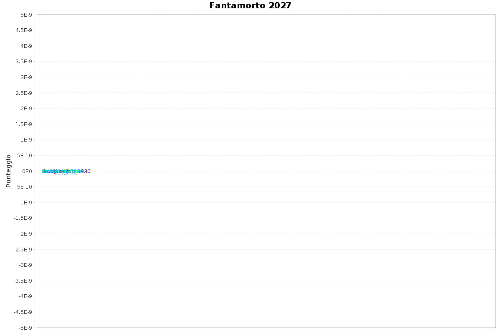

Statistiche
Utenti iscritti: 9
Atleti in gara: 26
Età media atleti: 83.42
Nazioni rappresentate: 9
Occupazioni distinte: 16
Generi distinti: 2
Atleti più vecchi:
- 100 anni - Dick Van Dyke
- 96 anni - Clint Eastwood
- 96 anni - Liliana Segre
- 95 anni - William Shatner
- 93 anni - Yōko Ono
- 92 anni - Cesare Previti
- 91 anni - Judi Dench
- 90 anni - Lino Banfi
- 90 anni - Mahmud Abbas
- 88 anni - Adriano Celentano
Atleti più giovani:
- 57 anni - Michael Schumacher
- 68 anni - Salvatore Cuffaro
- 71 anni - Bruce Willis
- 72 anni - Masoud Pezeshkian
- 74 anni - Giuliano Ferrara
- 74 anni - Vittorio Sgarbi
- 76 anni - Paolo Berlusconi
- 78 anni - Patty Pravo
- 79 anni - Giancarlo Magalli
- 80 anni - Donald Trump
Atleti più gettonati:
- 2 teams: Donald Trump
- 1 teams: Adriano Celentano
- 1 teams: Bob Dylan
- 1 teams: Bruce Willis
- 1 teams: Cesare Previti
- 1 teams: Clint Eastwood
- 1 teams: Dick Van Dyke
- 1 teams: Giancarlo Magalli
- 1 teams: Giuliano Ferrara
- 1 teams: Judi Dench
Compleanni di oggi:
Prossimi compleanni:
- 2026-11-15 Mahmud Abbas
- 2026-12-06 Paolo Berlusconi
- 2026-12-09 Judi Dench
- 2026-12-13 Dick Van Dyke
- 2027-01-03 Michael Schumacher
† Cimitero:
Unicità squadre:
(punteggio indicante quanto una squadra usa atleti poco o per nulla presenti in altre squadre)
- Bartopedia: 156
- Electrical-Drink-183: 156
- enne_instagram: 13
- msx: 8
- Unhappy_Job_9930: 8
- kukujojo: 0
- janekay16: 0
- CamelSmuggler: 0
- doctor_sus593: 0
Bot uptime: 117d 11h 46m 26s
Aggiornato: 2026-11-05 20:49:30